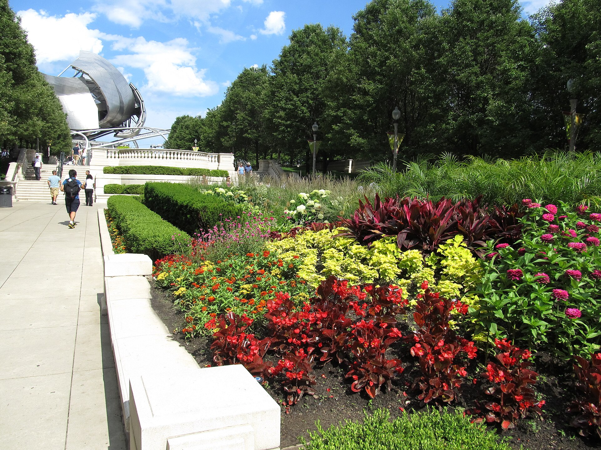
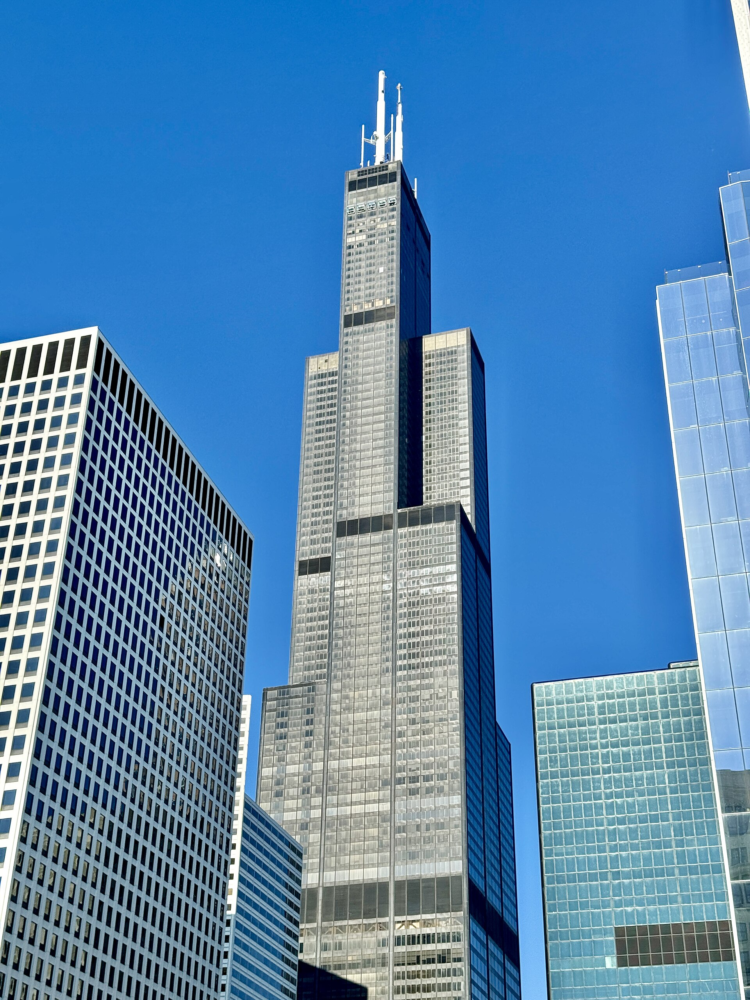
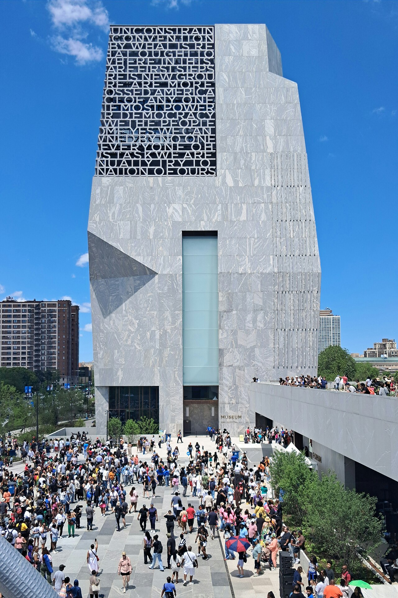
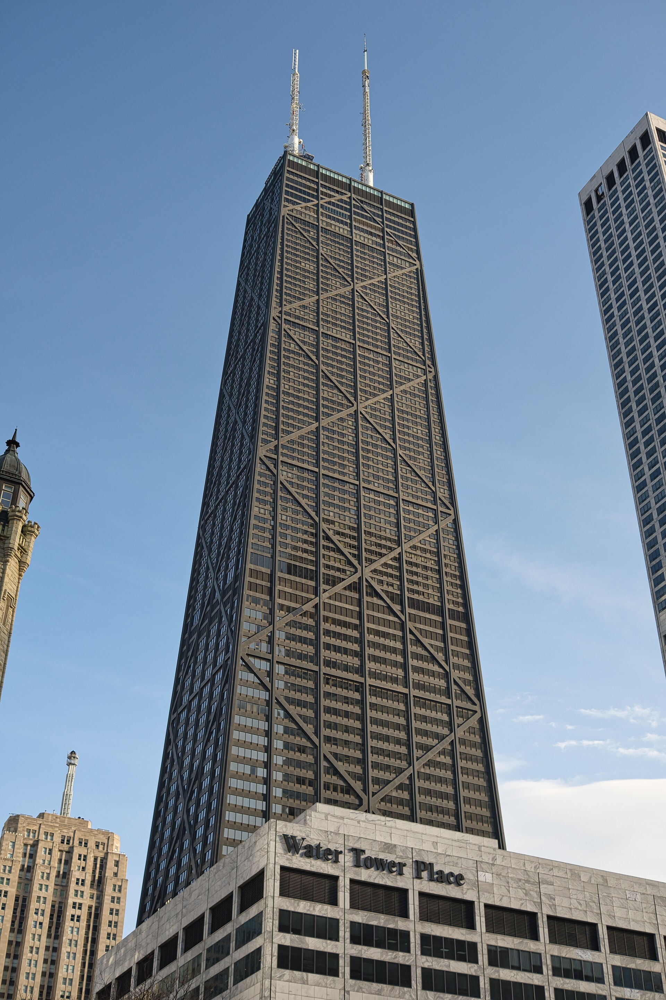
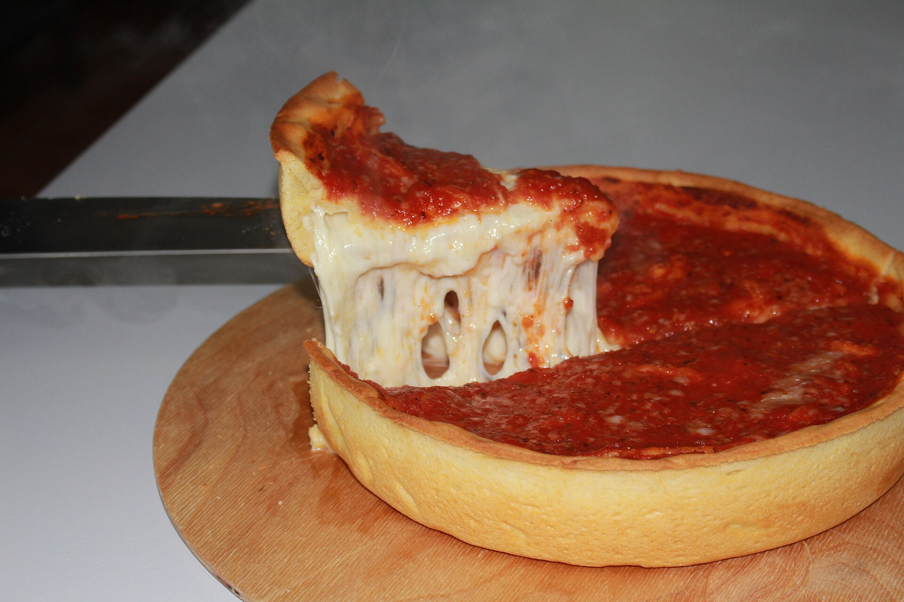
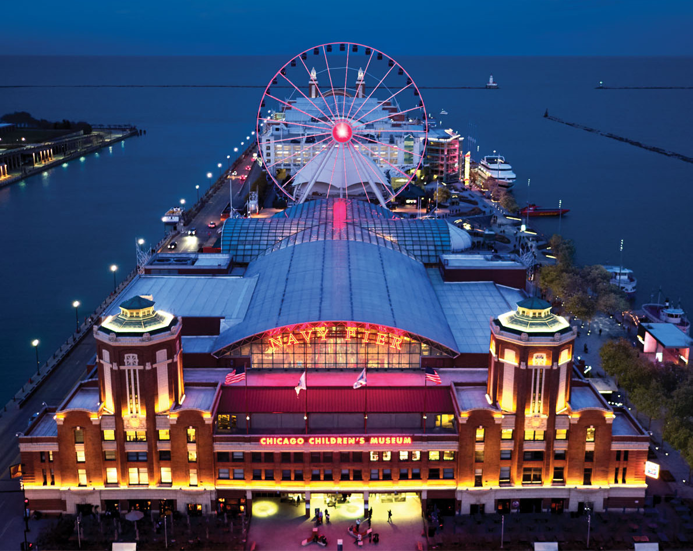

A gentle pace, a full trip.
Everything clusters tight so the parents aren’t shuttling back and forth, the hottest sun and the most walking are designed around, and there’s a real “wow” every day. Nothing on this trip is generic — every restaurant and sight is a Chicago original.
Architecture cruise
Day one. Seated, shaded, the whole skyline — the first jaw-drop.
The Obama Center
July 4th on the free campus — the heart of the trip.
Fireworks on the lake
Navy Pier’s biggest-ever show, watched from the water.
Chicago-original food
Purple Pig, ROOP & Aba — James-Beard rooms, zero chains.
Built around the parents
A hired car only when it earns its cost (airport, the July-4 crush); rideshare and a seated Metra train everywhere else. Short walks, AC escapes, and a smooth, not-bitter morning coffee dialed in for every day.
Vegetarian, egg-free, Maya-safe
Each spot is picked from its real menu — a named egg-free dish for Mom (with cross-contact flags where they matter) and a plain anchor for Maya, every time.
All Chicago, all the time
Tiffany domes, glassblowing, deep dish, a JB Mediterranean room, independent roasters — if you could find it in any other city, it’s not on here.
What this trip does for each of you.
Two cruises, the 360° deck, the Cultural Center’s Tiffany dome, the Bean — picturesque everywhere, short walks, and a smooth morning coffee she actually likes.
Your must-do, done right — plus a rooftop pool, good views, AC escapes from the sun, and a great cup of coffee. No long museum slogs.
Glassblowing where you make your own pieces to keep, a gentle pace with real rest, and plain, safe food at every stop — nothing dragged out.
Deep dish, three James-Beard rooms, a foodie cruise — a maxed-out Chicago where every bite is a local original, everyone happy alongside.
The itinerary.
Tap a day. Each is clustered to one area, paced for energy, and grounded in that day’s forecast. ★ marks the day’s headline.

Thursday · The river and the skyline
Coffee — Dollop
345 E Ohio, Streeterville. Independent Chicago roaster; smooth, not-bitter espresso for the parents.
Land at O’Hare → private car
Pre-booked SUV meets you at baggage claim — fits four plus bags, no rideshare-lot trek. The one airport leg where a hired car earns its cost (see Getting around).
Check in — Viceroy Chicago
Gold Coast: the most polished, safe pocket downtown, with a rooftop pool. Drop bags, freshen up.
Lunch — The Purple Pig
444 N Michigan, at the foot of the Mag Mile. James Beard “Best New Restaurant” — Mediterranean small plates, deeply veg-friendly. Arrive right at open or hold a Resy — the line is famous and you’ll be tired.
Shaded Riverwalk sit
A drink and the water at City Winery on the Riverwalk — Dad’s first proper relax.
Architecture river cruise
Chicago’s First Lady — 90 minutes, docent-narrated, the whole skyline from the water. AC cabin below is Dad’s sun escape.
Back to the hotel · rest
Recharge before dinner.
Dinner — Lou Malnati’s
The deep-dish rite of passage, five minutes away in River North. Call ahead — the pie bakes 45 minutes.
The Purple Pig
Maya: whipped ricotta + grilled bread, fried potatoes, focaccia — plain and safe.
- Mom · egg-free Whipped feta, hummus + roasted eggplant (vegan), salt-roasted beets, baked goat cheese
- Vikram: a JB-winning veg spread — the iconic arrival-day stop
⚠️ Tell the server “lacto-veg, no eggs, no anchovy” — a couple of salads hide anchovy and the desserts contain egg. Backup: Frontera Grill (Rick Bayless, River North sit-down).
Lou Malnati’s (River North)
Maya: plain cheese deep dish — her single safest dinner of the trip.
- Mom · egg-free The standard deep dish (the regular dough is egg-free). ⚠️ NOT the Buttercrust, NOT the gluten-free crust — both contain egg. Ask for no romano on top; confirm at the table.
Honesty note: deep dish is unmistakably Chicago, but Lou’s is a regional chain — kept only because it’s a 5-min, low-stress arrival-night meal. Want a one-of-a-kind crust instead? Pequod’s caramelized “burnt-cheese” crust exists nowhere else (~15 min to Lincoln Park).

Friday · Maya’s day — hands-on and indoors
Coffee — Sawada
112 N Green, Fulton Market — independent and singular to Chicago, steps from Aba. The Military Latte (matcha + espresso) is a one-of-a-kind cup; a clean, smooth standard latte too.
Breakfast — Wildberry
130 E Randolph (Chicago original). Maya: plain buttermilk pancakes + fries.
Chicago Cultural Center
78 E Washington. Free, AC, calm — home to the world’s largest Tiffany stained-glass dome (~30,000 pieces), which exists only here. Photogenic, low-walking; sets up the afternoon glasswork.
Lunch — Aba (rooftop)
302 N Green, West Loop. A foodie high point in the same cluster — no extra travel.
Glassblowing — Ignite Glass Studios
401 N Armour St, West Loop. A private lesson where Maya makes 2–3 glass pieces to take home; parents watch and photograph from the cool gallery.
Real afternoon pause
Café or hotel downtime — written in, to beat the cranky wall.
Dinner — ROOP
736 W Randolph. Michelin-listed progressive Indian with a dedicated vegetarian tasting — the foodie “wow,” same cluster.
Aba
Maya: laffa flatbread + crispy potatoes / plain rice — simple, named, safe.
- Mom · egg-free Hummus, stracciatella, grilled vegetables, whipped feta (skip the meringue & brûlée desserts)
- Vikram: the full 15-plus vegetarian spread — his big foodie meal of the trip
Books on Tock 30 days out — the Jul 3 window opened ~Jun 3 and the rooftop goes fast, so grab it now or watch cancellations.
ROOP
Maya: cheese naan + paneer + rice — plain and safe.
- Mom · egg-free Deeply veg, egg-aware kitchen — confirm egg-free on any tasting items when you reserve
Easy fallback in the same cluster if needed: Gaylord Fine Indian (Gold Coast).
Wildberry · Do-Rite
- Maya Wildberry buttermilk pancakes + fries
- Mom · egg-free A Do-Rite vegan donut (Maple Chai / Double Chocolate) + fresh fruit — Chicago-original and reliably egg-free, since Wildberry’s shared griddle isn’t

Saturday · The Fourth — Obama Center and fireworks
🧭 How the day fits together
Eat a real lunch downtown first, then go south for the Obama Center’s “People’s Fourth” (2–4 PM). A seated Metra Electric train brings you back downtown (~$28 for four, traffic-proof), then a genuine hotel rest before the fireworks cruise. Only the late Navy Pier leg uses a hired car — that’s where it earns its cost.
Coffee + quick bite — Do-Rite & Dollop
Do-Rite Donuts (233 E Erie, opens 6 AM). Mom: a vegan donut (egg-free); Maya: classic glazed. Parents’ coffee at Dollop next door. Conserve energy for a big, late night.
A real lunch downtown
Eat well before heading south, so the evening’s buffet is a bonus, not the only dinner.
Head to the Obama Center
6001 S Stony Island. Rideshare or Metra Electric down; ~25 min.
“The People’s Fourth” on the campus
The free, brand-new 19-acre campus — architecture, gardens, public art, and a costumed brass band (~3 PM). A short, shaded loop with benches; the Forum and library are AC refuges.
Metra Electric back downtown
57th St (Hyde Park) → Millennium Station. ~$28 for four, AC, seated, traffic-proof. Verify the July-4 holiday schedule the day before. A Hyde Park coffee (Plein Air Café) first, if you like.
Genuine rest at the hotel — immovable
Actually lie down. This block is what makes the two-leg July-4 day survivable.
Fireworks dinner cruise
Spirit of Chicago from Navy Pier. The 10 PM show from the open-air deck — Navy Pier’s largest ever, for the 250th. Seated, AC, no crowd-crush.
Hired car staged inland
Pickup at Grand/Illinois, out of the post-fireworks gridlock. The one night a guaranteed waiting car is worth it.
📞 Before you book the cruise — one call
It’s a lavish buffet, and the galley handles allergens openly. Book it only if a call confirms the food works for us — otherwise pivot to the reservable backup below.
All-ages ✓ (Maya is 20). Non-refundable — and the 12:30 lunch is the safety net. ~$128/adult.
🌇 Backup — Cindy’s Rooftop
If the cruise food fails the phone check: all-ages, reservable terrace over Millennium Park toward the lake, with grilled cheese / gnocchi for Maya and easy egg-free plates for Mom. Pair it with the free Grant Park “Independence Day Salute” at 7:30 PM, a 3-minute walk away.

Sunday · Slow morning, then home
Coffee — Dollop
An easy, smooth departure-morning cup near the hotel.
Breakfast — Wildberry (Streeterville)
196 E Pearson; go early to beat the holiday wait. Maya: pancakes + grilled cheese.
Millennium Park & the Bean
Cloud Gate’s mirror shot and Crown Fountain — flat, paved, low-walking. (We fly today, so admire the fountain, don’t get soaked.)
360 Chicago observation deck
875 N Michigan — lake-facing, with a lounge to actually sit, plus “TILT” for Maya. Mom’s closing skyline-photo moment.
One UberXL to O’Hare, together
Rested and predictable — no hired car needed Sunday. Terminal 1; check in together at United, same security, split at the gates. Leave ~3 hours early for peak post-holiday travel.
Fly home — nonstop
Family → RDU; Vikram → SFO. Both United nonstops from Terminal 1, ~73 minutes apart.
☕ The coffee, every day
Both parents get a smooth, not-bitter, genuinely-Chicago cup each morning — independent roasters, never a chain. The full rundown is in the food section.
📍 One last decision
360 Chicago is the recommended close. If energy’s low, swap in the Centennial Wheel at Navy Pier (AC gondola, seated) — or skip a formal deck, since both cruises already deliver elite skyline views.
Where we eat — and what.
Every pick is a Chicago original — institutions, James-Beard rooms, neighborhood gems. No chains. Each has a named egg-free dish for Mom and a plain Maya-safe anchor, pulled from the real menu.
The Purple Pig

Lou Malnati’s
ROOP
Aba

Spirit of Chicago cruise
Do-Rite · Wildberry
☕ The coffee program — smooth, never bitter, all Chicago
Both parents need a great morning cup. These are independent Chicago roasters with clean, balanced (not bitter) espresso — no chains.
| Day | Coffee | Why |
|---|---|---|
| Thu / Sat / Sun | Dollop · 345 E Ohio | Independent Streeterville roaster since ’05; smooth, well-pulled, in-cluster. |
| Fri | Sawada · 112 N Green | Singular West Loop spot by Aba — clean latte or the one-of-a-kind Military Latte. |
| Sat PM | Plein Air Café · Hyde Park | Smooth, local, AC — the cup for the Obama Center afternoon. |
Note: Intelligentsia (53 E Randolph) is a fine lighter-roast alternative by Millennium Park, but it’s majority JAB/Peet’s-owned now — hence the independents lead.
The Fourth of July, the big way.
It’s America’s 250th — and Navy Pier is staging its largest, longest fireworks show in its history, 15 minutes at 10 PM over the lake. We watch it from the water.
The show
~15 minutes, the largest in Navy Pier history, launched over Lake Michigan for the 250th. Full dark by 10.
From the water
A seated dinner cruise with an open-air deck — the most comfortable view in the city, away from the worst of the crowds.
Car staged inland
The one night a hired car earns its keep — waiting a block off the pier, out of the gridlock.
The daytime, same day
The Obama Center’s “People’s Fourth” runs the afternoon, and a seated Metra train brings you back downtown before the evening — all threaded together on the Saturday timeline. The free Grant Park “Independence Day Salute” (7:30 PM) is the backup plan if the cruise food doesn’t check out.
The Obama Presidential Center.
It opened June 19, 2026, in Jackson Park — and on July 4 it hosts “The People’s Fourth.” The campus is free and open, and that is the experience: the architecture Dad came for, gardens, public art, and a costumed brass band at 3 PM.
🎟️ About the museum interior
The indoor museum is timed-entry and sold out through the fall — the next public release is July 8, after we leave. So we treat the interior as a long shot, not the plan:
- Grab a $5 Founding Membership now for the July 1 early-access window — cheap insurance.
- Vikram works the cancellation line (773-900-0044) and asks the desk on the day.
- Either way, the free campus is the guaranteed, moving win.
Flights, hotel and getting around.
One terminal, both ways
The Sunday split drives the choice: one airline means one curb, one security line, and we only separate at the gates. Every leg is a United nonstop — no connections for anyone.
| Thu Jul 2 · out | RDU → ORD nonstop, ~8:00 AM, all four together |
| Sun Jul 5 · family | ORD → RDU nonstop, ~2:13 PM (Terminal 1) |
| Sun Jul 5 · Vikram | ORD → SFO nonstop, ~3:26 PM (Terminal 1) |
Aim for the ~7:30–8 AM RDU→ORD nonstop to land mid-morning. Add Economy Plus legroom for the parents; verify exact flight numbers at booking — book soon, holiday demand.
Viceroy Chicago
1118 N State St — the most polished, safe pocket downtown, with a genuine Chicago-boutique feel, lake/skyline views, and the area’s only true rooftop pool (Dad’s relax). A 2-Queen Lake View sleeps four; book two rooms if you want space. ~$1,560 (one room) / ~$2,800 (two), 3 nights.
Alternatives in the same area: LondonHouse (value; best river-view rooftop, no pool) · The Langham (splurge; 67-ft indoor pool + spa). Breakfast is no longer a factor — we eat Chicago originals out.
The hired car earns its cost exactly twice.
Airport arrival and the July-4 Navy Pier crush. Everywhere else, rideshare or a seated Metra train wins — so the “private SUV” isn’t a blanket expense, it’s two targeted splurges.
| Leg | Mode | Cost | vs. the alternative |
|---|---|---|---|
| Thu · O’Hare → hotel | Private SUV (meet & greet) | $150–180 | UberXL ~$55–110. Delta buys baggage help + no surge on tired day one. |
| Daily · short hops | Rideshare (UberX/XL) | $120–200 | $10–28 a leg; parents skip the July heat-walks. |
| Sat PM · Obama → downtown | Metra Electric day pass ×4 | ~$28 | vs. UberXL ~$45–75 holiday surge. AC, seated, traffic-proof. |
| Sat night · Navy Pier RT | Hired SUV, ~3-hr block | $330–420 | vs. rideshare ~$110–200 — but a guaranteed car beats stranding 4 people on the worst surge night. |
| Sun · hotel → O’Hare | Rideshare UberXL | $55–80 | Rested, predictable — no hired car needed. |
| Total ground transport | ~$700–910 | Comfortably inside budget. |
Skip the Blue Line on arrival (packed with luggage, drops in the Loop not Gold Coast). Book the July-4 evening car 2–4 weeks out with a written all-in quote including the post-fireworks wait.
Home base · 1118 N State St
Lunch · 444 N Michigan Ave
439 N Wells St
78 E Washington St
401 N Armour St
302 N Green St
736 W Randolph St
6001 S Stony Island Ave
Navy Pier · 600 E Grand Ave
Breakfast · 233 E Erie St
112 N Green St
875 N Michigan Ave
Budget.
The recommended build lands comfortably under the $7,500–8,000 target. A comfort-max version (Langham splurge, two rooms) still sits under the $10k ceiling.
| Category | Recommended | Comfort+ | Notes |
|---|---|---|---|
| Flights (4) | $1,450 | $1,650 | Family round-trip ×3 + Vikram one-way to SFO + legroom · all nonstop |
| Hotel · 3 nights | $1,560 | $2,600 | Viceroy 2-Queen (sleeps 4) · or Langham splurge / two rooms |
| Food | $1,700 | $1,900 | Purple Pig · ROOP · Aba at the top end; Chicago coffee + donuts |
| Activities & tickets | $1,250 | $1,350 | Arch cruise ~$230 · Ignite glass ~$240 · 360° ~$120 · fireworks cruise ~$550 · Cultural Center & Obama FREE |
| Ground transport | $800 | $900 | Airport SUV · July-4 evening SUV · Metra · daily rideshare |
| Buffer | $500 | $600 | Surge, tips, souvenirs, day-of flex |
| Total | ~$7,260 | ~$9,000 | Under target · under the $10k cap |
Reservations control center.
In order of urgency. Each link opens straight to your date, time, and party of 4 so you can check live availability and book in one tap. Tap the checkbox to mark it done — your progress saves on this device.
ℹ️ A note on “checking availability”
Booking sites (OpenTable, Tock, Resy) block automated checks, so I couldn’t pre-confirm exact open times. The links below jump to your date so it’s a one-tap look. If a top pick is full, each has a backup baked in (marked swap), so the day still works. Want me to drive these live and reshuffle around what’s booked? Connect the Claude Chrome extension and I’ll do it.